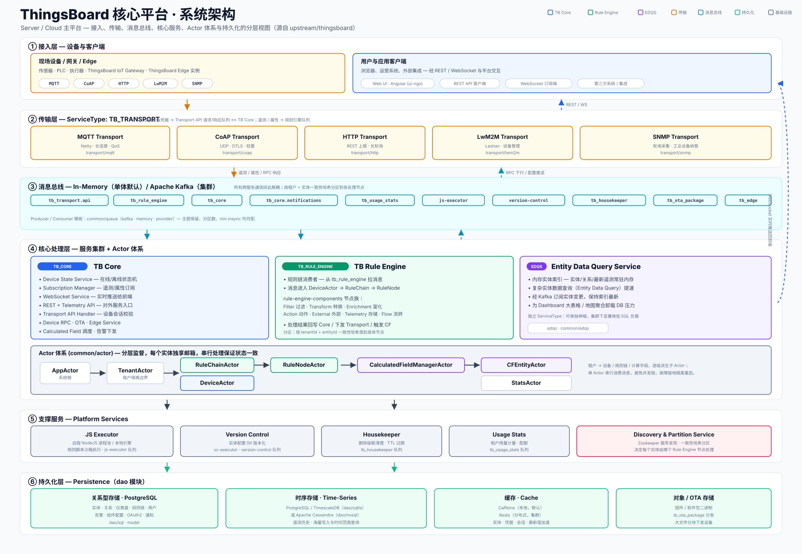
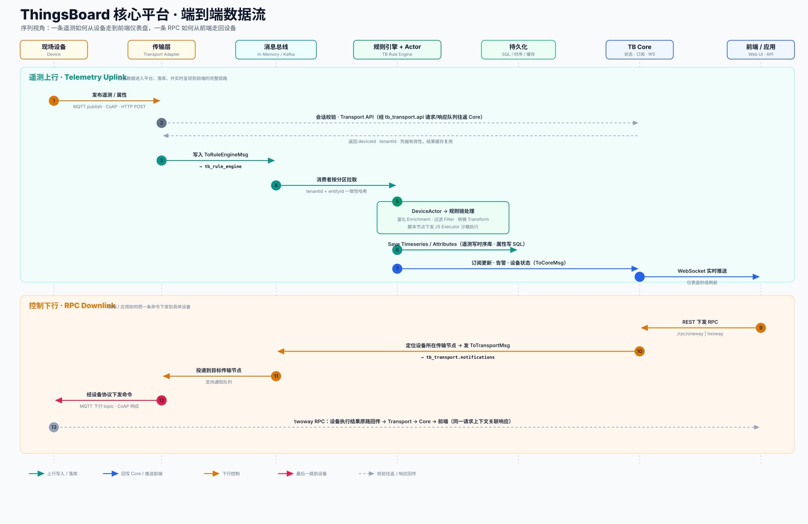

TB Core
TB_CORE平台的状态中枢与对外门面。设备在不在线、谁订阅了什么、前端连着哪个 socket，都归它管。
- Device State — 在线 / 离线状态机
- Subscription Manager — 遥测 / 属性订阅
- WebSocket Service — 实时推送给前端
- REST + Telemetry API — 对外入口
- Transport API — 设备会话校验
- Device RPC · OTA · Edge · 告警下发
四组件那张图，把 Server / Cloud 画在正中间，说一句"绕不开但不展开"。这一页就是把它展开——设备数据怎么进来，怎么被一层层处理，怎么落库，又怎么实时回到屏幕上。
视角是架构工程师的：不只是标清楚每个框叫什么，而是说清楚为什么是这个结构。消息总线为什么横在中间，Actor 为什么一个实体一个，分区为什么按实体哈希——这些判断比框图本身更值得看。
自上而下六层：接入、传输、消息总线、核心处理、支撑服务、持久化。每一层只跟相邻层打交道，跨服务通信全部经过中间那条消息总线——这是整套架构最重要的一根脊梁。

读这张图，先抓住第三层——消息总线。它把上面的传输、下面的处理彻底隔开：传输层只管把设备数据塞进队列，处理层只管从队列里取。两边互不感知对方在哪台机器、跑了几个实例，也就各自能独立伸缩。
再看第四层的三个并列服务。TB Core 管状态、订阅和对外接口；TB Rule Engine 管规则链处理；EDQS 专门扛复杂查询。它们都是独立的 ServiceType，集群里可以分开部署、分开扩容。下方那条 Actor 体系是核心处理层的骨架，决定了消息在内存里怎么流。
每一层的职责、对应源码、以及一句架构师视角的点评——为什么这层要这么切。每张卡片下方都有入口，点进去是这一层的深入解析。
两类来源：一边是现场设备、网关、Edge 实例，走 MQTT / CoAP / HTTP / LwM2M / SNMP；另一边是人和应用，走 REST 和 WebSocket。
ui-ngx (Angular) 前端五个协议适配器各管一种接入方式。它们做两件事：校验设备凭据（走 Transport API 往返 Core），把遥测和属性序列化后投进规则引擎队列。
transport/mqttcoaphttplwm2msnmp所有跨服务通信的中转站。单体默认用进程内内存队列，集群换成 Apache Kafka。主题按用途切开：tb_rule_engine、tb_core、tb_transport.api、通知、用量统计、版本控制等十来个。
common/queue（kafka · memory · provider）三个并列服务加一套 Actor 体系。Core 管状态与对外服务，Rule Engine 跑规则链，EDQS 扛实体查询。消息进入处理层后，由 Actor 在内存里逐级派发。
application/actorsrule-enginecommon/edqs不在主链路上、但缺了就转不动的一圈服务：JS Executor 跑规则脚本，Version Control 给配置做 Git 版本化，Housekeeper 清理级联删除和过期数据，Usage Stats 计量，Discovery & Partition 负责服务发现和实体分区。
msa/js-executorvc-executor · Zookeeper四块存储：PostgreSQL 存实体、关系、仪表盘、规则链这些结构化数据；时序数据走 PostgreSQL / TimescaleDB 或 Cassandra；缓存用 Caffeine 或 Redis；固件等大文件单独走 OTA 存储。
dao/sqldao/sqltsdao/nosql核心处理层里那三个并列服务，各自盯着不同的瓶颈。下面这套 Actor 体系，是它们在内存里组织消息的统一骨架。
平台的状态中枢与对外门面。设备在不在线、谁订阅了什么、前端连着哪个 socket，都归它管。
数据处理的主战场。从队列拉消息，送进设备 Actor，再沿规则链一个节点一个节点往下走。
tb_rule_engine实体数据查询服务。把仪表盘那些复杂的实体筛选、聚合查询，从主库卸到内存里跑。
common/edqs · edqs/用序列图看两条主链路：一条遥测从设备走到前端仪表盘（上行），一条 RPC 从前端走回设备（下行）。每条横线就是一次跨组件的消息传递。

上行（绿蓝线）：设备发布遥测，传输层先做一次会话校验——拿设备凭据去 Core 换回身份，结果会缓存复用，不必每条消息都验。校验过后，遥测被包成 ToRuleEngineMsg 投进 tb_rule_engine 队列。规则引擎按实体哈希拉到对应分区，交给该设备的 Actor，沿规则链做富化、过滤、转换，最后由存储节点写库。同时一条订阅更新发回 Core，Core 通过 WebSocket 把新值秒级推到仪表盘。
下行（橙红线）：前端发一条 RPC，Core 先定位这台设备此刻连在哪个传输节点上，再把命令发到那个节点的定向通知队列，传输层收到后用设备自己的协议下发。如果是 twoway 调用，设备执行结果会顺着原路一跳跳回传，靠同一个请求上下文把响应和请求对上号。
这里藏着一个容易被忽略的细节：下行之所以要先定位传输节点，是因为设备连接是有状态的、固定在某个节点上，而发起 RPC 的 Core 实例未必就是那个节点。这一跳"找人"，正是分布式有状态连接绕不开的代价。
框图回答"是什么"，这一节回答"为什么"。下面这几个判断，串起来基本就是 ThingsBoard 能横向扩展的底层逻辑。
tenantId + entityId 一致性哈希，保证同一实体的消息永远落到同一节点——既守住了顺序和状态一致，又能靠加节点线性扩容。这是有状态流处理的标准解法。同样的模块，靠 TB_QUEUE_TYPE 一个开关，就能在"一个 JVM 全装下"和"拆成一片集群"之间切换。这是 ThingsBoard 架构最实用的一处弹性。
| 维度 | 单体 Monolith | 微服务 Microservices |
|---|---|---|
| 消息总线 | 进程内 In-Memory 队列（默认） | Apache Kafka，跨节点分区 |
| 服务编排 | Core / Rule Engine / Transport 同进程 | tb-node、各传输、js-executor、vc-executor、edqs 分开部署 |
| 服务发现 | 无需，单实例 | Zookeeper 协调 + 一致性哈希分区 |
| 缓存 | Caffeine 本地缓存 | Redis 分布式缓存 |
| 适用场景 | POC、中小规模、边缘现场 | 海量设备、高吞吐、需要独立扩容 |
| 代价 | 扩展上限受单机约束 | 运维复杂度、组件数量显著上升 |
架构师视角：能从单体平滑长到微服务，前提正是前面那条消息总线和按实体分区的设计——业务代码自始至终面对的是"队列"这个抽象，至于队列底下是内存还是 Kafka，它并不关心。架构的弹性，往往就藏在这种"上层无感"的抽象里。
本页结论交叉验证自 upstream/thingsboard 本地源码与官方架构文档。下面是几个值得自己点进去看的关键位置。
Producer / Consumer 抽象、Kafka 与内存两套实现、各服务的队列 Provider。
common/queueTbActorSystem、邮箱、监督策略；应用层的 AppActor / TenantActor / DeviceActor / RuleChainActor。
common/actor · application/actorsDefaultTransportService 里 sendToRuleEngine 的落点，会话校验走 Transport API 的往返。
common/transport/transport-apiFilter / Transform / Action / External / Enrichment / Telemetry 各节点族的具体实现。
rule-engine/rule-engine-componentsSQL、时序（sqlts / nosql）、缓存的数据访问层与实体模型。
dao/src/main/java/.../dao服务分组、传输层、Rule Engine 与横向扩展模式的权威说明。